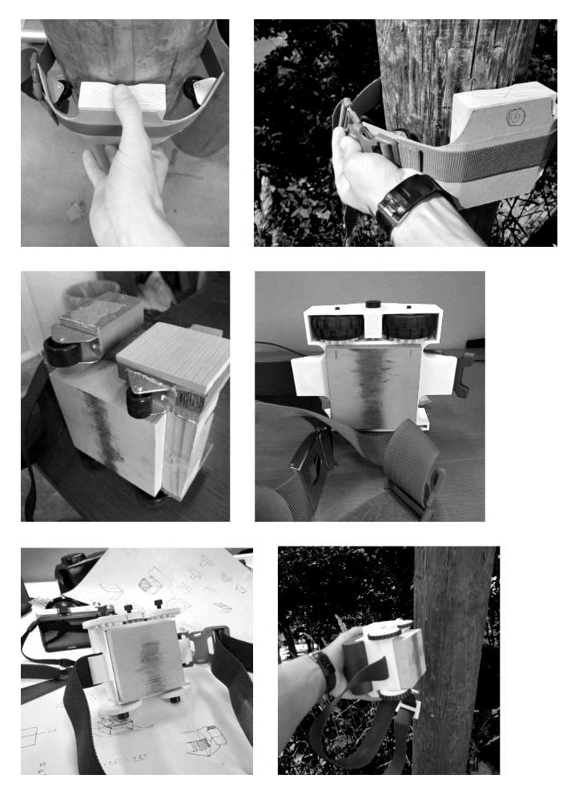

Birdsview utvikler en banebrytende tjeneste for
analyse av trestolper. Jeg ble en del av Birdsview i sommeren 2018 i rollen som designer, etter å ha
laget oppstartsbedriftens logo og grafiske profil. Mitt ansvarsområde utvidet seg til å inkludere design
av skanneren (kommer tilbake til den), brukergrensesnitt for tilhørende app og desktop-verktøy, i
tillegg til programmering av de
to sistnevnte.
Kjapp historiefortelling: Birdsview + tverrsnitt av trestolpe + inspeksjon. Flere animasjoner følger.
Inspektør skanner stolpen med en klatrende stolpeskanner.
Verifiserer og analyserer skannen.
Tilbake på kontoret får man full oversikt over alle inspiserte stolper.
Før man kan klatre, må man lære å spinne?
Før vi gikk i gang med å utvikle en klatrerobot, designet jeg en manuell
håndholdt skanner.
I utgangspunktet høres oppgaven «lag en håndholdt skanner» ikke så kompleks ut, hvis man fjerner det
tekniske aspektet. Likevel er det overraskende mye å tenke på:
Man må designe for trestoler med ulik størrelse. Stolpene varierer fra 18cm til 55cm i diameter.
Det er irriterende stor forskjell.
På grunn av radarbølger er det veldig viktig at komponenten med radaren er i fullstendig kontakt
med
treoverflaten mens den skanner.
For å få et fornuftig result må enheten til enhver tid måle hvor langt den har
skannet.
Dette er de viktigste tekniske kravene i problemstillingen, men da har jeg ikke engang nevnt brukerkravene...

Stroppen løser kravet om at radarkomponenten må være inntil trestolpen. Den gjør det enkelt for brukeren
å føre skanneren rundt stolpen under en skann. Ingen trestolper er dog fullstendig sirkulære. Derfor er
stroppen elastisk for å unngå at skanneren kiler seg fast. Dette gjør det også enklere å feste skanneren
på stolpen uten å måtte justere stroppen. Radarkomponenten er i tillegg fjørbelastet slik den ligger
inntil stolpen på tross av ujevnheter. Tannhjulene på toppen er koblet til en enkoder (sirkulær
skritteller) slik at om ett av hjulene ikke er i kontakt med stolpen, vil det andre fremdeles sørge for
at enkoderen «teller» hvor langt den har kommet.
Formen er inspirert av dagens hybridkameraer.
"Start skann"-knapp.
Enkel og effektiv festemekanisme som kan opereres i blinde.
En nokså enkel løsning på et nokså komplekt problem.